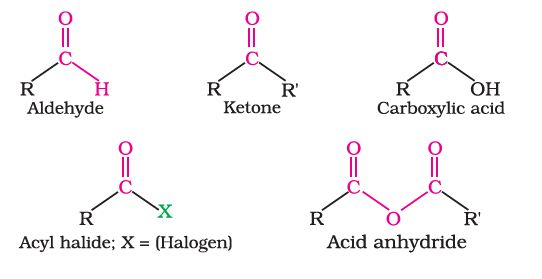
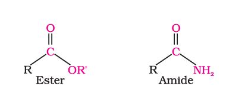
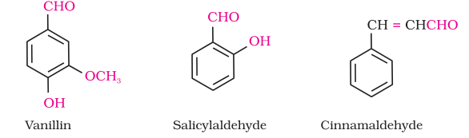
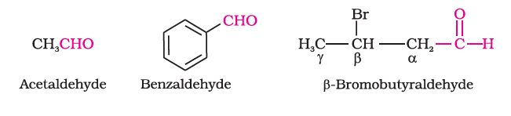
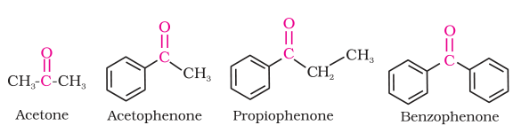
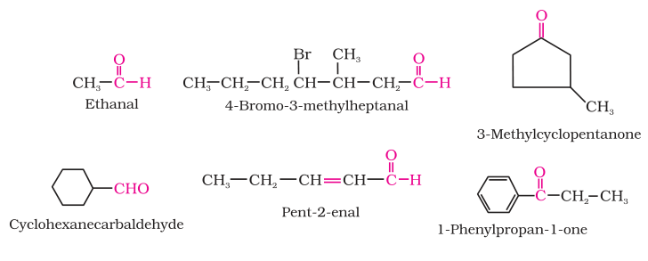
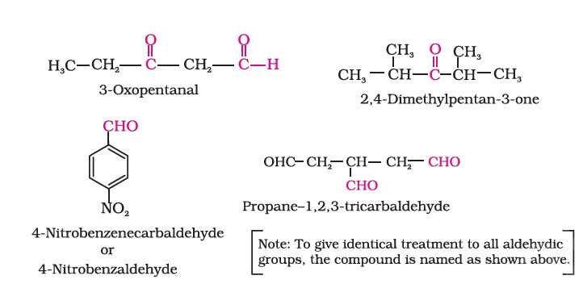
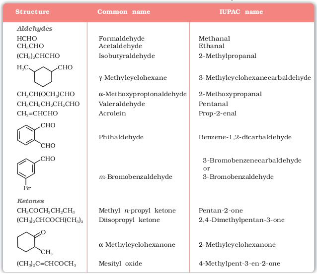
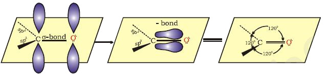
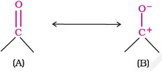

Carbonyl compounds are of utmost importance to organic chemistry. They are constituents of fabrics, flavourings, plastics and drugs.
In the previous Unit, you have studied organic compounds with functional groups containing carbonoxygen single bond. In this Unit, we will study about the organic compounds containing carbon-oxygen double bond (>C=O) called carbonyl group, which is one of the most important functional groups in organic chemistry.
In aldehydes, the carbonyl group is bonded to a carbon and hydrogen while in the ketones, it is bonded to two carbon atoms. The carbonyl compounds in which carbonyl group is bonded to oxygen are known as carboxylic acids, and their derivatives (e.g. esters, anhydrides) while in compounds where carbon is attached to nitrogen and to halogens are called amides and acyl halides respectively. The general formulas of these classes of compounds are given below:


Aldehydes, ketones and carboxylic acids are widespread in plants and animal kingdom. They play an important role in biochemical processes of life. They add fragrance and flavour to nature, for example, vanillin (from vanilla beans), salicylaldehyde (from meadow sweet) and cinnamaldehyde (from cinnamon) have very pleasant fragrances.

They are used in many food products and pharmaceuticals to add flavours. Some of these families are manufactured for use as solvents (i.e., acetone) and for preparing materials like adhesives, paints, resins, perfumes, plastics, fabrics, etc.
I. Aldehydes and ketones
Aldehydes and ketones are the simplest and most important carbonyl compounds.
There are two systems of nomenclature of aldehydes and ketones.
(a) Common names

The common names of ketones are derived by naming two alkyl or aryl groups bonded to the carbonyl group. The locations of substituents are indicated by Greek letters, α α′, β β′ and so on beginning with the carbon atoms next to the carbonyl group, indicated as αα′. Some ketones have historical common names, the simplest dimethyl ketone is called acetone. Alkyl phenyl ketones are usually named by adding the acyl group as prefix to phenone. For example

(b) IUPAC names
The IUPAC names of open chain aliphatic aldehydes and ketones are derived from the names of the corresponding alkanes by replacing the ending –e with –al and –one respectively. In case of aldehydes the longest carbon chain is numbered starting from the carbon of the aldehyde group while in case of ketones the numbering begins from the end nearer to the carbonyl group. The substituents are prefixed in alphabetical order along with numerals indicating their positions in the carbon chain. The same applies to cyclic ketones, where the carbonyl carbon is numbered one. When the aldehyde group is attached to a ring, the suffix carbaldehyde is added after the full name of the cycloalkane. The numbering of the ring carbon atoms start from the carbon atom attached to the aldehyde group. The name of the simplest aromatic aldehyde carrying the aldehyde group on a benzene ring is benzenecarbaldehyde. However, the common name benzaldehyde is also accepted by IUPAC. Other aromatic aldehydes are hence named as substituted benzaldehydes.

The common and IUPAC names of some aldehydes and ketones are given in Table 12.1.
Table 12.1: Common and IUPAC Names of Some Aldehydes and Ketones

The carbonyl carbon atom is sp2-hybridised and forms three sigma (σ) bonds. The fourth valence electron of carbon remains in its p-orbital and forms a π-bond with oxygen by overlap with p-orbital of an oxygen. In addition, the oxygen atom also has two non bonding electron pairs. Thus, the carbonyl carbon and the three atoms attached to it lie in the same plane and the π-electron cloud is above and below this plane. The bond angles are approximately 120° as expected of a trigonal coplanar structure (Figure 12.1).

Fig.12.1 Orbital diagram for the formation of carbonyl group
The carbon-oxygen double bond is polarised due to higher electronegativity of oxygen relative to carbon. Hence, the carbonyl carbon is an electrophilic (Lewis acid), and carbonyl oxygen, a nucleophilic (Lewis base) centre. Carbonyl compounds have substantial dipole moments and are polar than ethers. The high polarity of the carbonyl group is explained on the basis of resonance involving a neutral (A) and a dipolar (B) structures as shown.
